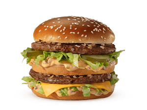

O ICÔNICO
SANDUÍCHES
Big Mac®
Um clássico em cada camada.
Um sabor que é só dele.
BONS MOMENTOS COMEÇAM AQUI
Tem dia que tudo o que você precisa é daquele sabor que já conhece. Seu favorito está te esperando.
Explore o cardápio
QUALQUER HORA É UMA BOA HORA
Entre um compromisso e outro,
sempre cabe uma pausa gostosa.
Chame quem transforma qualquer pausa na melhor parte do seu dia.
Encontre seu acompanhamentoPara fechar com chave de ouro ou simplesmente começar pela melhor parte.
Explore as sobremesasTEM SABOR QUE VIRA MEMÓRIA
O primeiro encontro com os amigos. A parada no meio da viagem. A batatinha que você disse que não ia pegar.
Os momentos mudam. A vontade de repetir fica.
Reencontre seu favorito